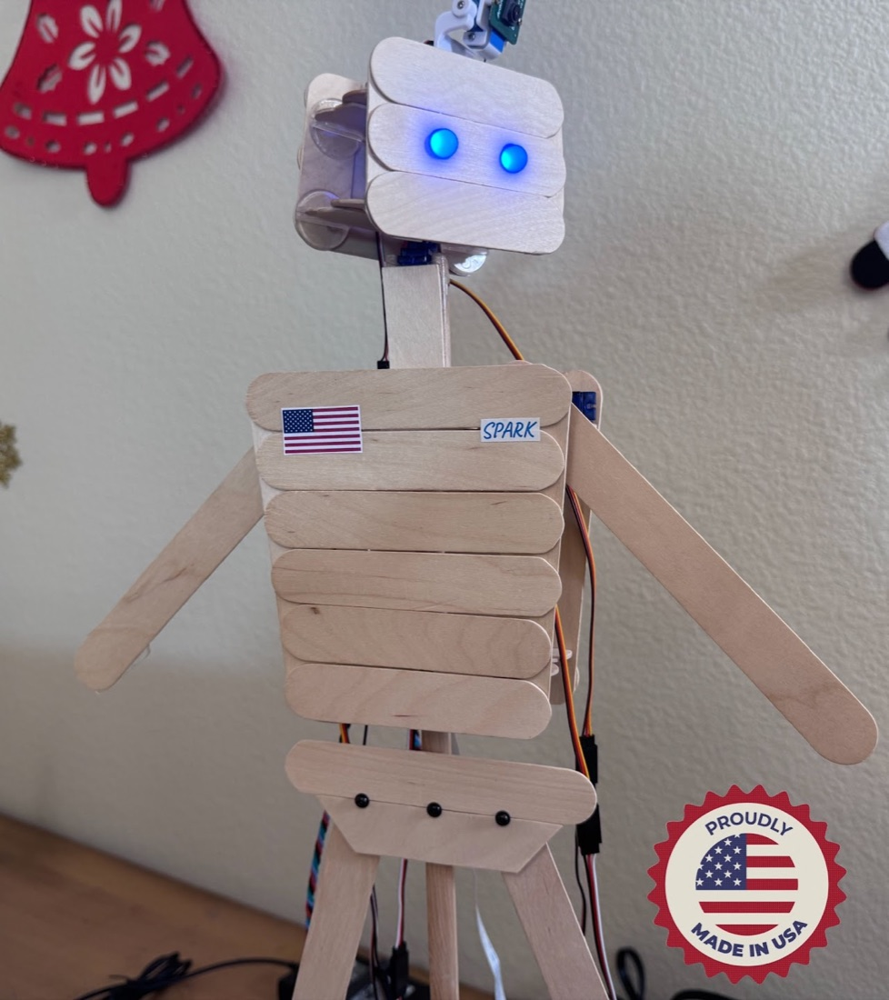
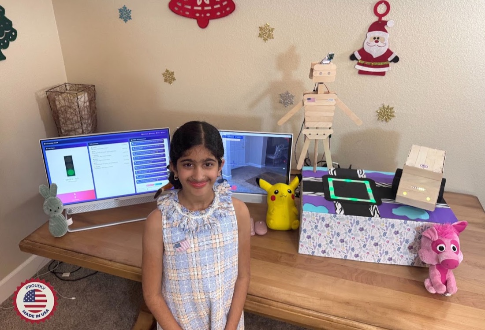
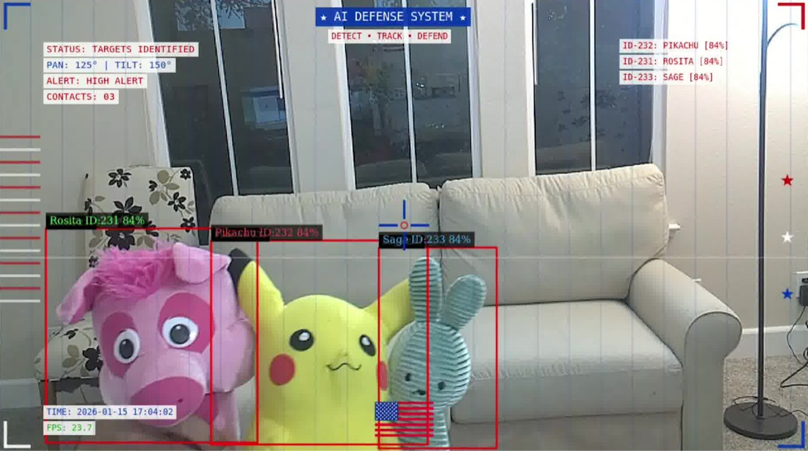
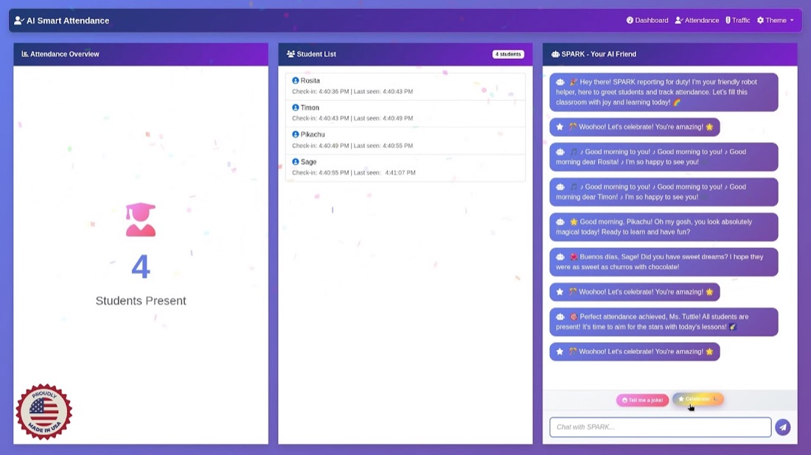

Igniting Scientific Curiosity Through AI & Robotics
SPARK stands for STEM Projects with AI and Robotics for Kids

🏆
Presidential AI Challenge State Winner
We are proud to announce that Saanvi Pagadala is a 2026 State Champion in the prestigious Presidential AI Challenge, a national competition focused on artificial intelligence and STEM innovation that recognizes students using technology to solve meaningful real-world problems.
Saanvi was one of only two students from California selected as a state-level winner in her category, making this an extraordinary achievement for such a young innovator. The official state winners announcement can be viewed here: 2026 State Champions Announcement
SPARK reflects a vision of how AI and robotics can support communities in practical ways. Built from first-principles learning and hands-on experimentation, the project was designed, coded, and tested by Saanvi using AI tools for ideation and problem solving, without relying on prebuilt robotics kits.
Through SPARK, Saanvi hopes to inspire more students, especially girls, to explore AI, robotics, and community-focused innovation.
TL;DR
Don't have time to read everything? Simply watch the End-to-End Demo video to see SPARK in action — from sensing and AI decision-making to robotic responses — all in one concise overview.
End-to-End Demo (3.49m)
A full demonstration showing SPARK sensing, deciding, and acting together.
What Is SPARK?
SPARK is an AI robotics platform created by Saanvi Pagadala, originally developed for the Presidential AI Challenge. Proudly designed and built in the United States, SPARK brings together artificial intelligence, computer vision, and robotics to demonstrate how young innovators can apply AI responsibly to solve real-world problems and create meaningful impact.
The Spark Behind SPARK
SPARK is designed as a platform, not a one-time robot. Instead of solving just one problem, it uses a shared AI pipeline — vision, decision-making, and feedback — that can be reused across different robots and real-world scenarios. This approach encourages responsible AI use, creativity, and long-term learning, allowing new ideas to grow from the same core system.
How It Works?
SPARK uses a camera to observe its environment, processes what it sees using AI models, makes decisions through defined logic, and responds using physical movement, lights, and on-screen or spoken feedback.
What's Included?
This project brings together hardware, AI software, and real-world demos, including:
- SPARK Humanoid Robot and SPARK Car
- A live AI-controlled Traffic Light system
- NVIDIA Jetson–based edge AI processing
- Real-time video pipelines using NVIDIA DeepStream
- A custom-trained YOLO model for visual understanding
- Conversational AI with text-to-speech, giving SPARK a human-like personality
- A Python-based AI application for decision-making
- A live HUD (Heads-Up Display) showing detections, states, and actions
Each of these components is explained and demonstrated in the videos below, with full technical details available in the linked project PDF.

Learn More
A series of six short YouTube videos below explains the problem, solution, system architecture, AI workflow, live demonstrations, and future extensions of the SPARK platform.
Thanks for exploring the world of AI & Robotics with us! If you have any questions, feedback, or need help with the app, we're here for you.
SPARK Traffic Lights (3.14m)
SPARK observes and controls a small traffic light setup in real time.
SPARK Car (3.28m)
The SPARK Car navigates its environment using AI vision, sensors & inputs (WIP).
SPARK Humanoid (3.31m)
SPARK's humanoid robot performs AI-powered sensing and analysis with its camera, and executes precise robotic movements.
Heads-Up Display (HUD) (4.22m)
The HUD displays live AI detections and system states clearly.
Real-World Applications (2.27m)
Python apps demonstrate SPARK solving practical problems like Traffic Safety and Student Attendance.
End-to-End Demo (3.49m)
A full demonstration showing SPARK sensing, deciding, and acting together.
Custom AI Vision Model
Curious how SPARK learned to recognize real objects?
This project features a custom-trained YOLO object detection model built from scratch to teach a computer how to find and identify toys. Learn more about the data labeling, training process, and performance results, complete with visual graphs showing how the model improved over time.
Dive into the Custom YOLO Model Report →

Conversational AI & Text-to-Speech
Our robot isn't just smart with its eyes. It is smart with its words, too!
Using a Large Language Model (LLM) AI via the ChatGPT API, it has a playful, engaging personality, can converse, and respond with humor to make interactions genuinely fun. Combined with OpenAI text-to-speech, the robot can announce, alert, and narrate actions in a lively voice. These AI features make the app interactive, entertaining, and almost alive.

How I Built the SPARK Platform
From brainstorming and design, to AI training, hardware building, circuit design, software vibe-coding, and full integration — this video walks through every step of how I built SPARK. Watch the journey from idea to a fully working, AI-powered robot platform.
The Making of SPARK (4.56m)
SPARK in Action: see the complete build process from concept to full system.
El Remoto – iOS App
El Remoto is a companion iOS app developed as part of the SPARK platform to remotely monitor and control AI-powered robots and systems. The app provides a simple, intuitive interface for viewing live system status, triggering actions, and interacting with real-time AI decisions, making complex robotics and AI behavior accessible through a mobile device. Learn more...